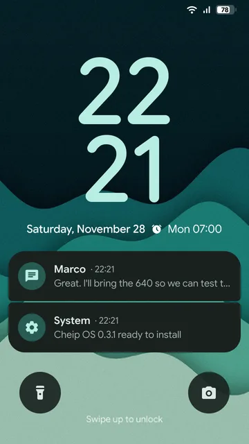
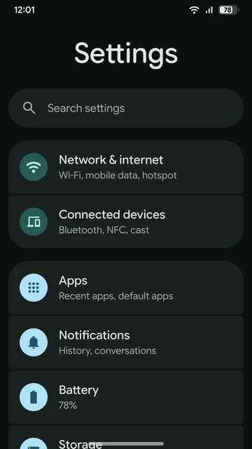
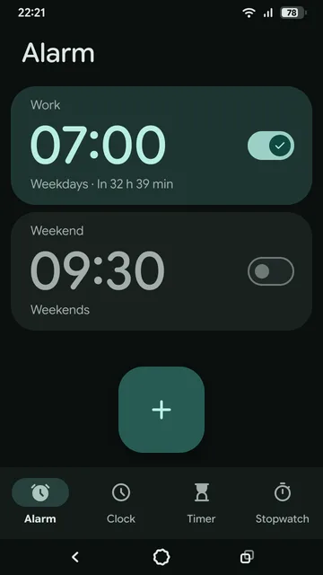
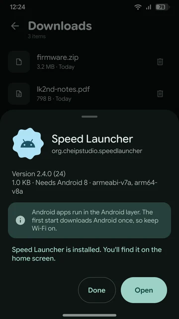
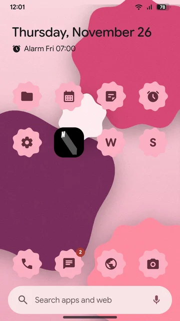

Your Lumia,
reborn.
Cheip OS is a light Linux phone OS with Material 3 Expressive design, dynamic colors, fluid gestures and Android apps. Built for phones with 1 GB of RAM.


Devices
Lumia phones with the Snapdragon 400 family share one Cheip OS build. Pick yours.
Install on Lumia 735
About 20 minutes, phone connected to a Windows PC the whole time. No card to take out, no extra programs after the unlock. Windows Phone stays and you choose the system at every start.
Get ready
- Charge the phone above 70%. Charging does not work inside Cheip OS yet: you charge from Windows Phone.
- A microSD card of 8 GB or more, inside the phone. Everything on it will be erased. You never take it out.
- A Windows PC with Chrome or Edge, and a USB data cable.
- Save your photos and files: unlocking can go wrong.
Unlock the bootloader
Lumia phones only start systems signed by Microsoft until you unlock them. This is done once, with WPInternals (official GitHub page).
- Run WPInternals as administrator and connect the phone.
- Open Unlock > Unlock bootloader. It asks for the FFU of your phone (profile), the Engineering SBL3 / programmer for your model and a donor FFU with a Windows 10 Mobile version WPInternals supports (for example 10.0.10586 or 10.0.15063).
- Press Unlock and don't unplug the cable until it's done.
Add Cheip OS to the boot menu
In WPInternals open Manual mode and choose Mass Storage. The phone's drives appear on the PC. Then press the button and pick the EFIESP drive, or on phones like the 735 the EFIESP folder inside the MainOS drive.
On many Lumias the volume keys can't move inside the boot menu, so the phone starts the default system. Choose Cheip OS as default to install it; you can switch back here any time.
The site copies the Cheip OS bootloader to the phone, keeps a backup of the boot configuration on the phone (BCD.cheipbak) and in your Downloads, and adds a Cheip OS entry next to Windows Phone.
Install Cheip OS
- Close WPInternals and restart the phone (hold Power until it vibrates). Keep the cable connected.
- In the boot menu choose Cheip OS with the volume keys and press Power. The screen shows the Cheip OS bootloader.
- Press Connect phone, select Android in the list, then Install. The system is written straight to the microSD inside the phone.
Start Cheip OS
From now on the phone asks at every start: Windows Phone or Cheip OS. The first start of Cheip OS takes a couple of minutes while it grows to fill the microSD. Updates arrive over the air.
What you get
Lock screen with big clock, themed icons, Pixel style quick settings, clock app, full settings, APK installer and more.




